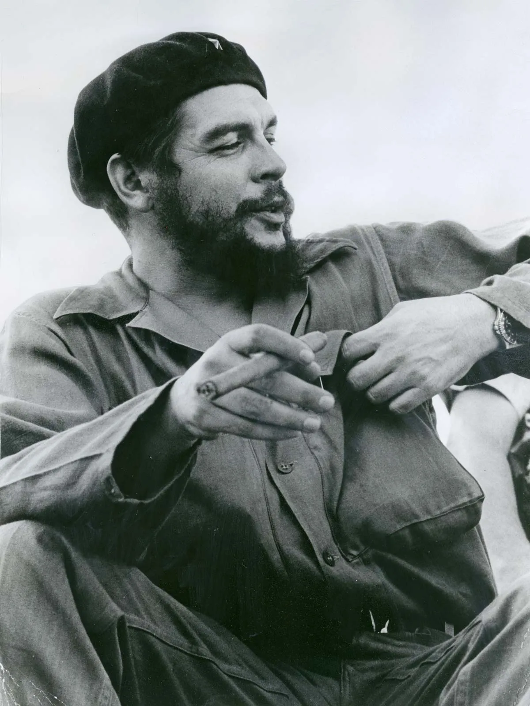
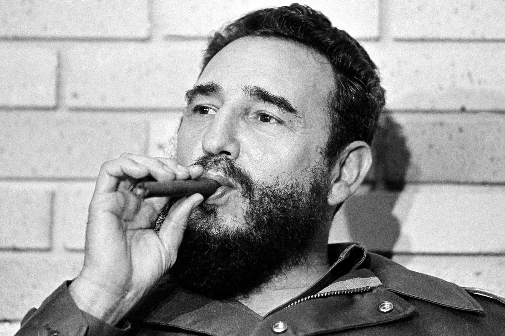
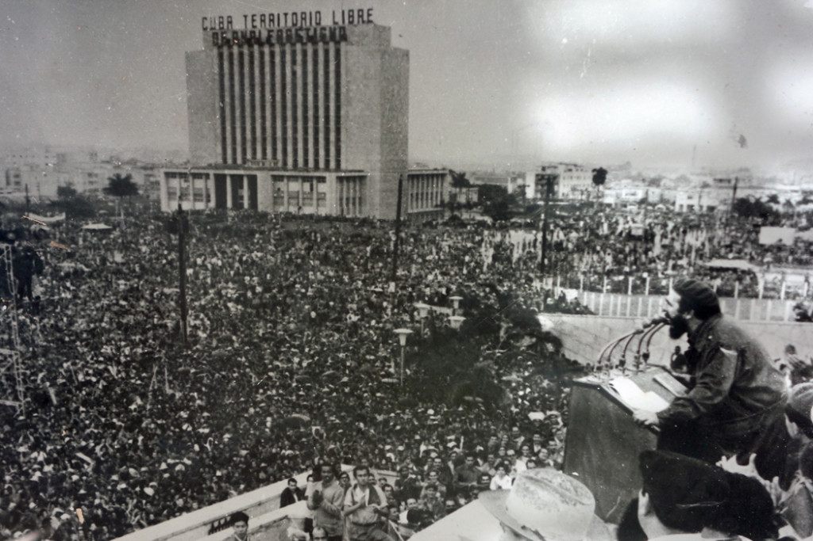

Weatherforcast for the next 24 hours: Plenty of Sunshine Wind: 7km/h SSE: Ther: 21°C; Hum: 82%
#news1
11.2.1970
#Modern edition

The legacy of Argentine Marxist revolutionary Che Guevara (June 14, 1928 – October 9, 1967) is constantly evolving in the collective imagination. As a symbol of counterculture worldwide, Guevara is one of the most recognizable and influential revolutionary figures of the twentieth century. However, during his life, and even more since his death, Che has elicited controversy and wildly divergent opinions on his personal character and actions. He has been both revered and reviled, being characterized as everything from a heroic defender of the poor, to a cold-hearted executioner.
Guevara's extensive written legacy includes intellectual writings on radical Marxist politics and social theory, military/guerrilla warfare strategy and tactics, diplomatic memos, books, speeches, magazine articles, letters, poetry and diaries, as well as official documents preserved in Cuban government archives. Che's practical and theoretical work had a profound political impact around the globe during the second half of the 20th century, especially in the developing world, where revolutionary organizing and anti-colonial struggles were inspired by his thought and example.[1] As a consequence, his writings s have been translated into hundreds of different languages.
In 1967, while pictures of Guevara's dead body were being circulated and the circumstances of his death debated, his legend began to spread. Demonstrations in protest against his execution occurred throughout the world, and articles, tributes, songs and poems were written about his life and death.[2] Latin America specialists advising the U.S. State Department immediately recognized the significance in the demise of "the most glamorous and reportedly most successful revolutionary", noting that Guevara would be eulogized by communists and other leftists as a "model revolutionary who met a heroic death.
British politician George Galloway has remarked that "one of the greatest mistakes the US state ever made was to create those pictures of Che's corpse. Its Christ-like poise in death ensured that his appeal would reach way beyond the turbulent university campus and into the hearts of the faithful, flocking to the worldly, fiery sermons of the liberation theologists."[4] The Economist magazine has also pointed out how Che's post death photos resemble Andrea Mantegna's The Lamentation over the Dead Christ. Thus fixing Guevara as a modern saint, the man who risked his life twice in countries that were not his own before giving it in a third, and whose invocation of the "new man", driven by moral rather than material incentives, smacked of Saint Ignatius of Loyola more than Marx.[5]

Fidel Alejandro Castro Ruz (/ˈkæstroʊ/;[1] American Spanish: [fiˈðel aleˈxandɾo ˈkastɾo ˈrus]; 13 August 1926 – 25 November 2016) was a Cuban revolutionary and politician who was the leader of Cuba from 1959 to 2008, serving as the prime minister of Cuba from 1959 to 1976 and president from 1976 to 2008. Ideologically a Marxist–Leninist and Cuban nationalist, he also served as the first secretary of the Communist Party of Cuba from 1961 until 2011. Under his administration, Cuba became a one-party communist state; industry and business were nationalized, and socialist reforms were implemented throughout society
In 1947, Castro joined the Party of the Cuban People (or Orthodox Party; Partido Ortodoxo), founded by veteran politician Eduardo Chibás. A charismatic figure, Chibás advocated social justice, honest government, and political freedom, while his party exposed corruption and demanded reform. Though Chibás came third in the 1948 general election, Castro remained committed to working on his behalf.[18] Student violence escalated after Grau employed gang leaders as police officers, and Castro soon received a death threat urging him to leave the university. However, he refused to do so and began to carry a gun and surround himself with armed friends.`
In April 1948, Castro travelled to Bogotá, Colombia, leading a Cuban student group sponsored by President Juan Perón's Argentine government. There, the assassination of popular leftist leader Jorge Eliécer Gaitán Ayala led to widespread rioting and clashes between the governing Conservatives—backed by the army—and leftist Liberals.[28] Castro joined the Liberal cause by stealing guns from a police station, but subsequent police investigations concluded that he had not been involved in any killings. [28] In April 1948, the Organization of American States was founded at a summit in Bogotá, leading to protests, which Castro joined.[29]
Castro co-founded a legal partnership that primarily catered to poor Cubans, although it proved a financial failure.[41] Caring for money or material goods, Castro failed to pay his bills; his furniture was repossessed and electricity cut off, distressing his wife.[42] He took part in a high school protest in Cienfuegos in November 1950, fighting with police to protest the Education Ministry's ban on student associations; he was arrested and charged for violent conduct, but the magistrate dismissed the charges.

On 26 March 1962, the ORI became the United Party of the Cuban Socialist Revolution (PURSC), which in turn became the Communist Party of Cuba on 3 October 1965. In Article 5 of the Cuban constitution of 1976, the Communist Party is recognized as "the superior guiding force of society and of the State, that organizes and orients common efforts toward the high goals of the construction of socialism and the advancement toward communist society".[4][5] All parties, including the Communist Party, are prohibited from publicly advertising their organizations.